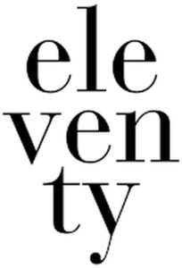

Trade Mark Journal No.2025/026 27 June 2025
WO0000001849842 (3,4,9,18,24,25,35,43)
Office of origin: Italy
Date of International Registration:30 December 2024
Date of designation in the UK:
30 December 2024

International priority date claimed: 27 December 2024
(Italy)
(302024000192222)
- Class 3
- Eau de Cologne; lipstick cases; hair conditioners; joss sticks; shoemakers' wax; depilatory wax; mustache wax; laundry wax; tailors' wax; shoe wax; false eyelashes; make-up powder; cosmetics; cosmetics for animals; cosmetic creams; shoe cream; creams for leather; skin whitening creams; dentifrices; deodorants for pets; hair spray; almond milk for cosmetic purposes; scented wood; after-shave lotions; hair lotions; lotions for cosmetic purposes; lip glosses; shoe polish; mascara; beauty masks; eyebrow pencils; cosmetic pencils; oils for perfumes and scents; oils for cosmetic purposes; cotton wool for cosmetic purposes; pomades for cosmetic purposes; potpourris [fragrances]; sun-tanning preparations [cosmetics]; cosmetic preparations for baths; sunscreen preparations; cosmetic preparations for skin care; depilatory preparations; perfumery; antiperspirants [toiletries]; laundry bleach; dry-cleaning preparations; make-up preparations; nail care preparations; shaving preparations; sachets for perfuming linen; make-up removing preparations; perfumes; air fragrancing preparations; lipsticks; bath salts, not for medical purposes; tissues impregnated with make-up removing preparations; shaving soap; soap; shampoos; dry shampoos; nail polish; breath freshening sprays; breath freshening strips; talcum powder, for toilet use; hand creams; fragrance refills for electric room fragrance dispensers; fragrance refills for non-electric room fragrance dispensers; air fragrance reed diffusers.
- Class 4
- Candles; perfumed candles; wicks for candles; lamp wicks.
- Class 9
- Containers for contact lenses; eyeglass cases; covers for smartphones; cases for smartphones; sunglasses; goggles for sports; smartglasses; eyeglasses; 3D spectacles; smartwatches; mouth guards for sports; head guards for sports; smartphones; nose clips for swimmers; tablet computers; mouse pads; cordless telephones; covers for tablet computers; bullet-proof clothing; binoculars; bags adapted for laptops; decorative magnets; shoes for protection against accidents, irradiation, and fire; encoded key cards; protective helmets; protective helmets for sports; riding helmets; eyeglass chains; optical lenses; spectacle lenses; magnets; respiratory masks, not for medical purposes; downloadable smartphone application software; headphones; protective helmets.
- Class 18
- Saddlery; key cases; walking sticks; umbrella sticks; vanity cases, not fitted; beach bags; bags for sports; wheeled shopping bags; purses; handbags; briefcases; imitation leather; walking stick handles; umbrella handles; suitcase handles; slings for carrying infants; pouch baby carriers; parasols; umbrellas; business card cases; credit card cases; pocket wallets; haversacks; travelling bags; boxes of leather or leatherboard; suitcases; small suitcases; attache cases; garment bags for travel; rucksacks; tanned leather; hip bags; wallets; small clutch purses [handbags]; bags; leather and imitations of leather; clutch bags [hand bags].
- Class 24
- Bed clothes; face towels of textile; towels of textile; bath linen, except clothing; household linen; bed linen; table linen, not of paper; brocades; blankets for household pets; fustian; crepon; damask; labels of textile; handkerchiefs of textile; pillowcases; mattress covers; covers for cushions; pillow shams; sheets; printers' blankets of textile; wall hangings of textile; cloths for removing make-up; cloth coasters; cloth; textile material; shower curtains of textile or plastic; fabric; table napkins of textile; bed covers; velvet; bed blankets; bed sheets; lace table mats, not made of paper; beach towels; bed blankets; picnic blankets; travelling rugs [lap robes]; cotton blankets; covers for cushions; woven fabrics for cushions; silk blankets; woollen blankets.
- Class 25
- Clothing of imitations of leather; clothing of leather; clothing for gymnastics; dresses; suits; jumper dresses; bath robes; non-slipping devices for footwear; clothing; berets; underwear; galoshes; skull caps; footwear; boots for sports; stockings; shirts; short-sleeve shirts; bodices [lingerie]; sports singlets; hats; top hats; paper hats [clothing]; coats; hoods [clothing]; hat frames [skeletons]; chasubles; belts [clothing]; detachable collars; camisoles; headgear for wear; corselets; bathing suits; beach clothes; neckties; ascots; bathing caps; shower caps; panties; scarfs; skirts; overalls; mittens; ski gloves; welts for footwear; ready-made clothing; leggings [trousers]; liveries; hosiery; sports jerseys; sweaters; muffs; sleep masks; boxer shorts; underpants; slippers; parkas; pelisses; pajamas; ponchos; stocking suspenders; sock suspenders; brassieres; sandals; bath sandals; shoes; bath slippers; football boots; sports shoes; overcoats; chemises; soles for footwear; tee-shirts; togas; uniforms; visors [headwear]; cap peaks; bow ties; flip-flops; blousons; bermuda shorts; polo shirts; espadrilles; ties [clothing]; neckwear; ear muffs [clothing]; neck tube scarves; puttees; earbands [clothing]; Bermuda shorts; bow ties; denim coats; denim jackets; denim clothing; fleece vests; quilted vests; sweatshirts; jackets [clothing]; skirts; trousers; crew neck sweaters; turtleneck sweaters; maillots [hosiery]; kerchiefs [clothing]; pocket squares; scarves; denim pants; coats; ski suits; vests; work clothing.
- Class 35
- Retail and wholesale store services and online retail and wholesale store services, connected with the sale of cosmetics, candles, eyeglasses, sunglasses, jewellery and parts thereof, leather goods, bags, wallets, luggage, umbrellas, textiles, fabrics and textiles for household, household linens, clothing, headgear and footwear; shop window dressing; distribution of samples; direct mail advertising; outsourced administrative management for companies; marketing; negotiation and conclusion of commercial transactions for third parties; organization of exhibitions for commercial or advertising purposes; organization of fashion shows for promotional purposes; advertising; personnel recruitment; marketing research; market studies.
- Class 43
- Restaurants; bar services; café services; cafeteria services; food and drink catering; hotel accommodation services; restaurant services; snack-bar services; cocktail lounge services; providing conference facilities.
ELEVENTY WORLD S.R.L.
Representative: Haseltine Lake Kempner LLP, Fountain House, 4 South Parade Leeds LS1 5QX UNITED KINGDOM